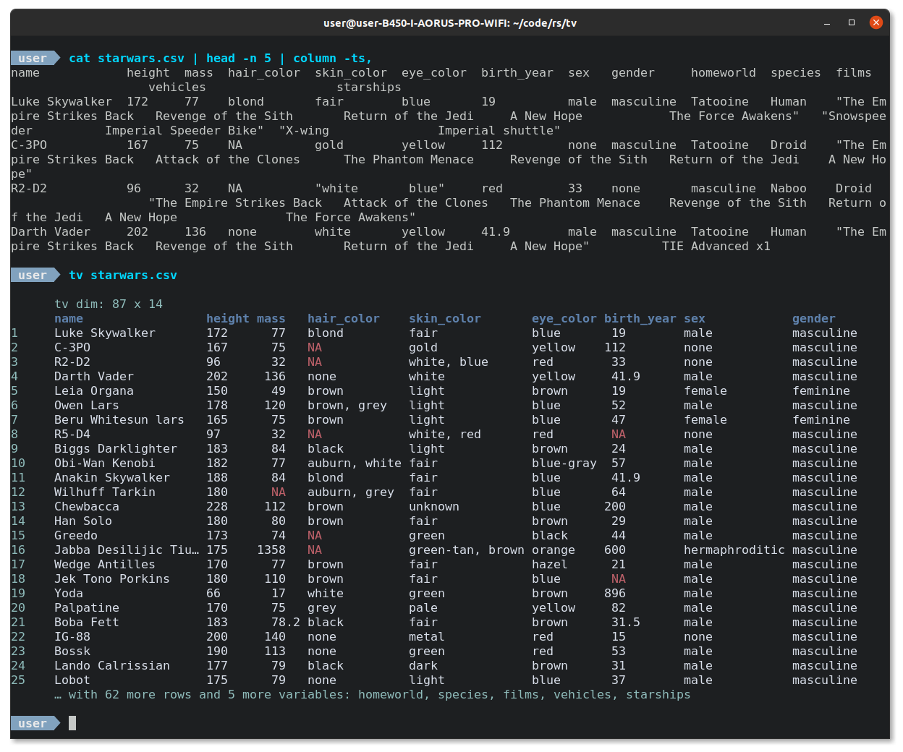
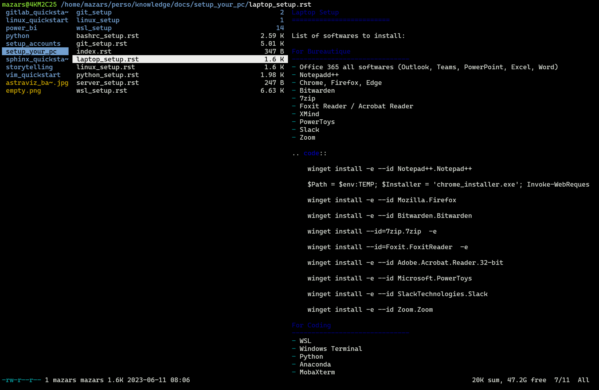
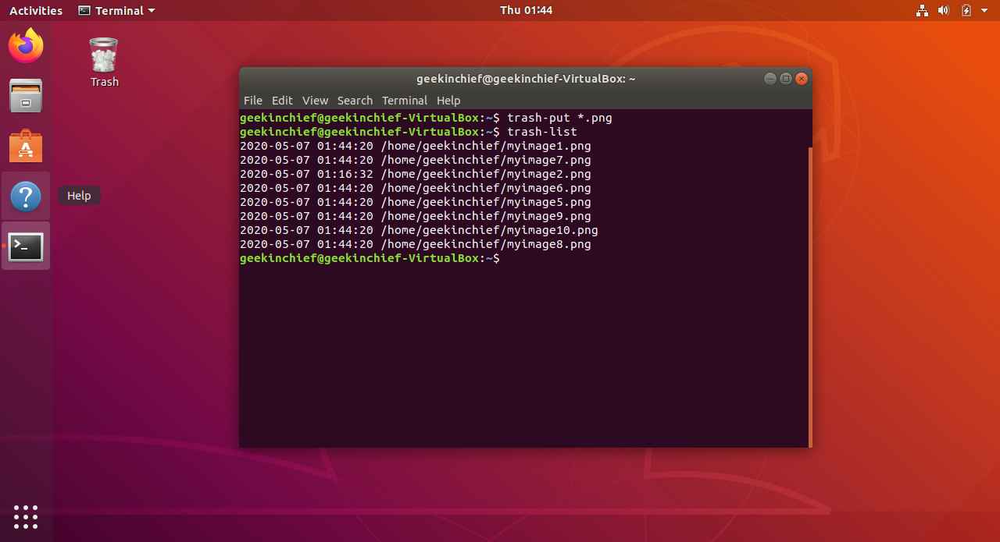
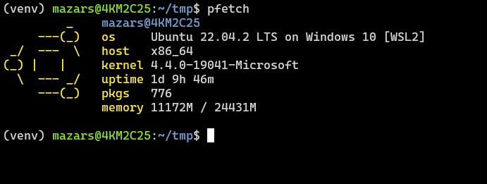
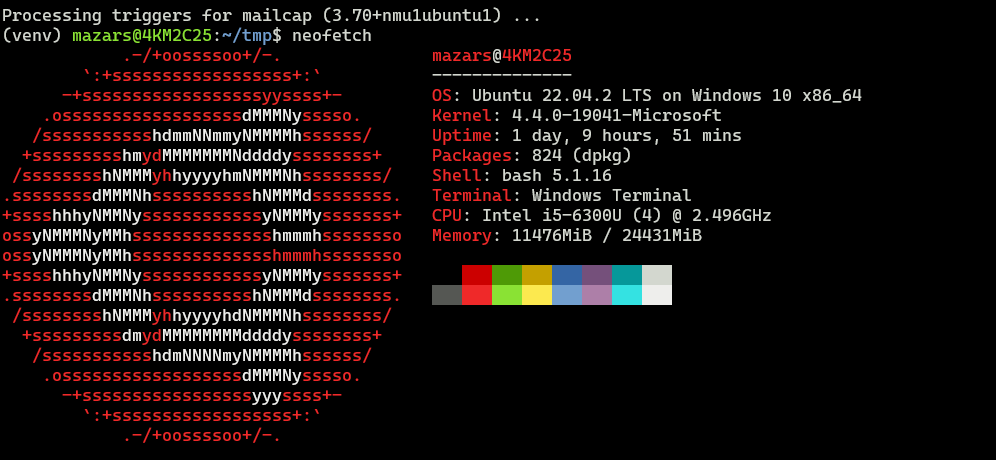
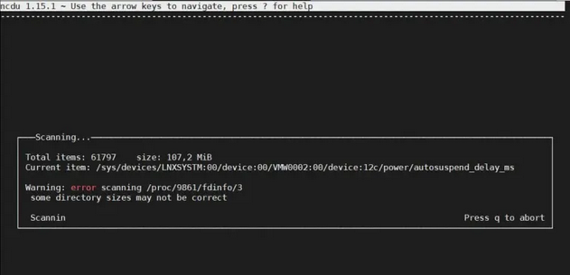
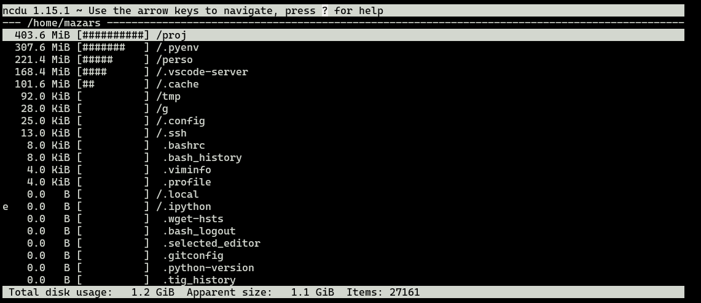

Useful linux package installation#
Tidy viewer#
Tidy Viewer (tv) is a cross-platform csv pretty printer that uses column styling to maximize viewer enjoyment.
It allows pretty printing of a csv file in your command line
Features
Nice colors out of the box
Significant digit printing (no more decimal dust taking valuable terminal space)
NA comprehension and coloring (no more misaligned data cells due to missing data)
Dimensions printed first (no more guessing how many rows and columns are in the data)
Column overflow logic (no more misalignment due to terminal dimensions)
Long string/Unicode truncation (no more long strings pushing other data around)
Customizable with a dotfile config (bring your own theme)
Installation
wget https://github.com/alexhallam/tv/releases/download/1.4.30/tidy-viewer_1.4.30_amd64.deb
sudo dpkg -i tidy-viewer_1.4.30_amd64.deb
echo "alias tv='tidy-viewer'" >> ~/.bashrc
source ~/.bashrc
Ranger#
ranger is a console file manager with VI key bindings. It provides a minimalistic and nice curses interface with a view on the directory hierarchy. It ships with rifle, a file launcher that is good at automatically finding out which program to use for what file type.
Installation
sudo apt-get update
sudo apt-get install ranger
Usage
To use ranger, just type:
ranger
To change the editor selection
select-editor
Trash-CLI#
source: https://www.tomshardware.com/how-to/send-files-to-trash-linux
Avoid accidentally wiping out files when you delete in Linux.
Deleting files in Linux is a fairly straightforward process, whether you work with a graphical interface or the command line. The former, more often than not, relegates deleted files into the trash directory,giving you the option to access deleted files and even restore them if needed. But this isn’t the case with the popular rm command. Once invoked, rm immediately flushes the specified files, skipping the trash directory altogether.
To recover a file deleted from the Linux command line, you must use dedicated software such as PhotoRec, but the process is involved and cumbersome, and not the subject of this tutorial.
If you wish to permanently delete files using the graphical environment, you must press the Shift+Del key combo. You’ll be prompted with an alert seeking confirmation before the selected files or directories are deleted. This is in stark contrast to the command line, where running the rm command will delete the specified files without any confirmation prompts.
The trash-cli utility adds the ability to move files to the trash from the command line.
Installation
sudo apt-get install trash-cli
Usage
Once installed, the trash-cli utility provides five unique commands that can be used to delete files or directories, view the contents of the trash, restore files and more:
trash-put – Delete specified files or directories.
trash-list – Displays the contents of the trash.
trash-rm – Delete individual files or directories from the trash.
trash-empty – Delete all files and directories from trash.
restore-trash – Restore the specified file or directory.
To delete a file, you must use the trash-put command. You can provide a list of space-separated files, and even use pattern-matching to specify the files you wish to delete. Unlike the rm command, which won’t delete non-empty directories unless you use the -R command option, trash-put has no such reservations about deleting them.
pfetch#
The goal of this project is to implement a simple system information tool in POSIX sh using features built into the language itself (where possible).
Installation
Use the wget command on Linux or Unix to install pfetch:
wget https://github.com/dylanaraps/pfetch/archive/master.zip
Use the unzip command or tar command to unzip the file named master.zip on Linux or Unix:
unzip master.zip
Install the file using install command:
sudo install pfetch-master/pfetch /usr/local/bin/
ls -l /usr/local/bin/pfetch
Usage
pfetch
neofetch#
Same thing but more complete
The Neofetch utility written in bash their main purpose is to be used in screenshots to show other users what operating system or linux distro you are using, including theme, icons, hardware configuration and more.
Installation
sudo apt-get update
sudo apt-get install neofetch
Usage
neofetch
ncdu#
source: https://sysreseau.net/ncdu-analyser-disque-linux/?expand_article=1
ncdu (NCurses Disk Usage) is a very powerful and easy to use Linux tool that can scan disks to see large files and directories that are taking up space from your partitions. ncdu is based on the du command.
Installation
sudo apt-get update
sudo apt-get install ncdu
Usage
ncdu
The command scans the directory you are in, here I am on /home/.
After scanning, the tool displays the occupation size of each directory and files sorted in descending order
Use the up/down arrows to move between the elements, type “i” to see the details of the selected element and retype “i” to close the displayed window:
To view the items in the selected directory, press the “right” arrow or the ENTER key. It will display the list of files or directories in the selected directory, to return to the parent directory, press the “left” arrow.
What if I want to scan a specific directory? It’s simple, just indicate the path to this one:
ncdu ~/perso/
If you want to see the result of a scan later, in this case just export the results in any archive format for later viewing:
ncdu -1xo- / | gzip > export.gz
To view the report use the zcat command as below
zcat export.gz | ncdu -f-